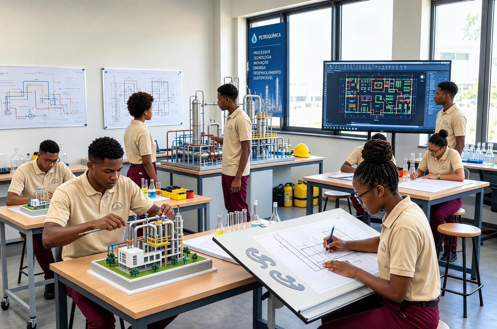
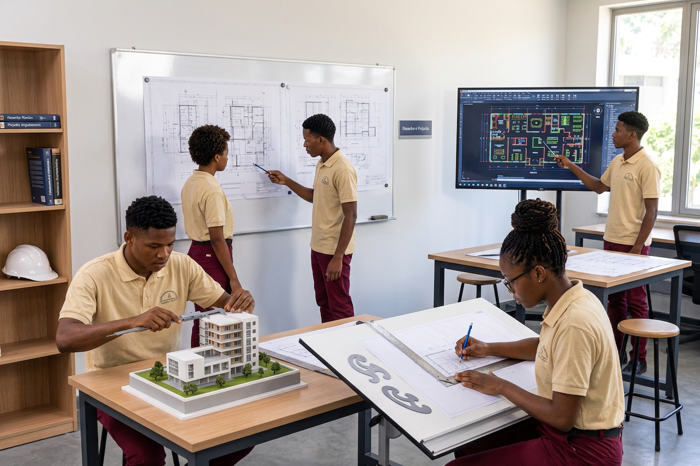
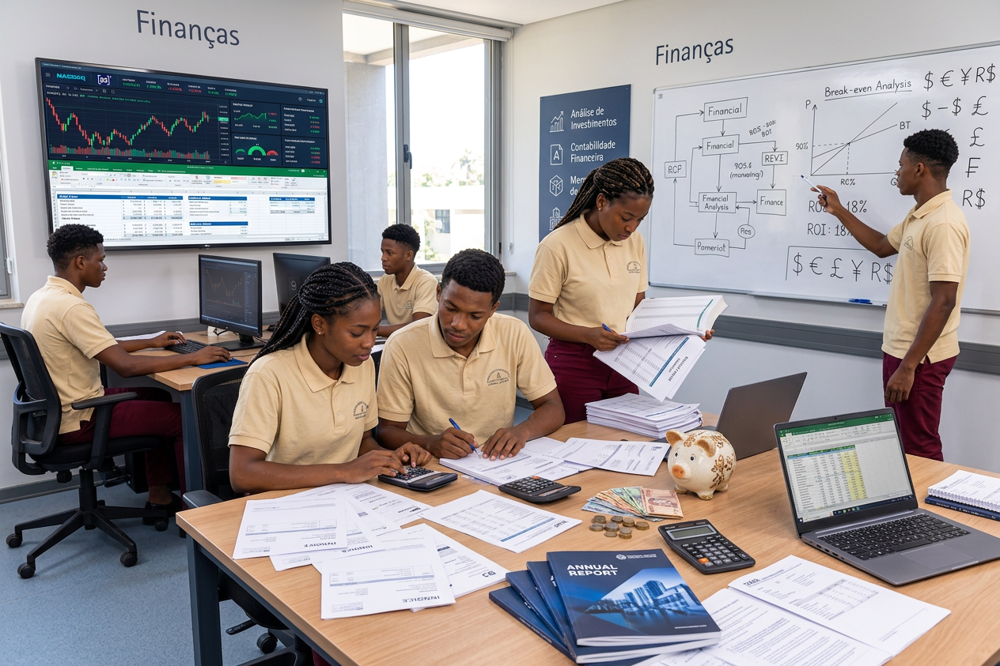

Aprendizagem prática
Laboratórios, estagios e oficinas aproximam o aluno dos desafios reais de cada profissão.
Professores experientes
Corpo docente dedicado que acompanha cada aluno do primeiro dia ao exame final.
Formação técnica da 10ª à 13ª classe que prepara o aluno para o mercado de trabalho ou para o prosseguimento de estudos.
CURSO
Electrónica, circuitos, bases de engenharia, transmissão de dados para a era da conexão.


CURSO
Petroquímica, tecnologia de produção, processos industriais e desenvolvimento sustentável para o futuro.
CURSO
Eletricidade, sistemas de energia e saberes essenciais para as instalações eléctricas.

CURSO
Desenho técnico, modelação tridimensional e saberes essenciais para a conceção de projetos arquitetónicos e de engenharia.
CURSO
Gestão financeira, análise de mercados e saberes essenciais para o planeamento e controlo de investimentos.

Laboratórios, estagios e oficinas aproximam o aluno dos desafios reais de cada profissão.
Corpo docente dedicado que acompanha cada aluno do primeiro dia ao exame final.